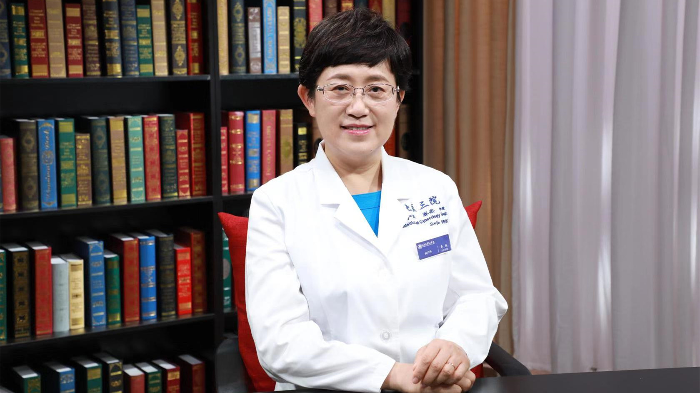

1.81 试管婴儿¶
乔杰 院士¶

北京大学第三医院院长 妇产科主任医师 教授；
国家妇产疾病临床医学研究中心主任；中华医学会妇产科学分会委员会副主任委员；中国医师协会生殖医学专业委员会主任委员；中国女医师协会会长；健康中国行动推进委员会专家咨询委员会委员。
主要成就： 带领团队不断从生殖相关疾病病因、诊疗及预防等多层面开展基础与临床研究工作，研究成果连续入选2014、2015年度中国科学十大进展；以第一或通讯作者在《Science》《Lancet》《JAMA》《Cell》和《Nature》等国际顶级杂志发表SCI文章200余篇，并以第一完成人获得国家科技进步二等奖2项、省部级一等奖3项等。
专业特长： 擅长妇产科及生殖健康相关临床、基础研究及转化工作。如多囊卵巢综合征、子宫内膜异位症等疑难不孕症发病机制研究，辅助生殖技术方法优化，人类早期胚胎发育调控机制研究及在早期阻断出生缺陷的植入前胚胎单基因疾病诊断新方法研发等。
试管婴儿就是在试管里长大的婴儿吗？¶
（采访）乔院长，您好。非常荣幸今天您做客《医学微视》，参与我们的话题讨论，我们今天来聊一聊试管婴儿的这个话题，试管婴儿可能是大家熟知的一个名词，试管婴儿是在试管里面长大的婴儿吗？
你这个问题，咱们中国大陆第一例试管婴儿郑萌珠在北京大学第三医院出生之后，回到甘肃老家的时候，火车站上一个老大爷就是这么问的，说要看看试管里怎么长成这么大一个孩子？
其实试管婴儿的学名是体外受精-胚胎移植，就是在体外把妈妈的卵细胞和爸爸的精子放在一块，受精之后形成了受精卵，一般来说在受精之后2-5天把这个胚胎再放回到妈妈的子宫里边去，代替了妈妈输卵管功能。正常情况下，我们人类的卵母细胞和精子是在输卵管相遇，从一个细胞分化发育成四个细胞、八个细胞，然后到妈妈子宫里边着床。所以体外受精-胚胎移植就是代替了妈妈的输卵管功能，俗称为试管婴儿。其实它在体外，在试管里待的时间是比较短的，在培养箱里可能待上2-5天。
（采访）但是对于这个胚胎长大还是在妈妈的子宫里面。
对，还是母亲要自己来孕育这个胎儿。
国外做试管婴儿比国内好吗？¶
（采访）试管婴儿的技术从出现开始到现在有多少年了？
世界的第一例试管婴儿是1978年，我们中国大陆的第一例试管婴儿是1988年，我们起步可能比世界晚了十年，但是现在发展非常好，目前我们是能够实施体外受精-胚胎移植这个技术，量最大的一个国家。同时因为我们只代替了输卵管这一点，可能还不能帮助到更多的不孕症患者，所以咱们还有各种衍生的辅助生殖技术来帮助不同原因的不孕患者，同时也进一步提高治疗的成功率！
（采访）可能有的爸爸妈妈会觉得，我去国外做是不是试管婴儿的成功率会更高，我国现在试管婴儿的技术，在国际上是一个什么样的水平？
现在咱们国家整个的体外受精-胚胎移植技术本身，特别是我们在中华人民共和国国家卫生健康委员会，有了专门的对于辅助生殖技术的管理之后，对于实施这个技术医院的一些场地、设备、人员的培训都有了统一的要求，所以近20年来，我们中国的辅助生殖技术发展非常迅速。
我们不仅是在这个环境、使用的仪器设备，特别是我们的医生、胚胎师，还有护士帮助做咨询服务工作，我们整体水平都走到了国际先进的行列，特别是在某些方面，像对于生殖生物学的研究，还有像植入前对遗传病的诊断，我们都走到了世界的领先水平。
即便是已经有了四十年左右的实践经历，成功率也从刚一开始前辈们探索的百分之几、二十几、三十几，到我们现在平均的活产率可能在世界范围内是30%-40%。即便如此依然是有了很多的干预，同时还是有相当的患者，不是说你做三次、五次、八次就一定能成功的。
这个既跟胚胎的质量有关、胚胎的质量是源于卵母细胞和精子的质量，同时也还跟母亲体内的环境，我们叫“土地”，就是子宫内膜，还有我们的微环境，就是子宫的环境，还有机体的状况是一个大环境，其实都是密切相关的。所以实在是没有必要到国外去做辅助生殖技术，尤其是长途的旅行，同时语言不通，还有一些时差，导致了成功率的下降！
所有不孕不育的夫妻都可以做试管婴儿吗？¶
（采访）是不是一对夫妻，如果他们不孕不育了，就可以去做试管婴儿了？
其实不孕不育的原因还是比较多的，所以如果是一对夫妻，也有正常的性生活，有一年不怀孕，我们在临床诊断上就叫做不孕症。
但是这个不孕症可能是大家对生理知识不太了解，方法不太对，没有找到最适合怀孕的时间。也可能是一些小的问题，比如说女性的排卵不太规律，比如说因为有一些慢性的炎症，但是比较轻，导致输卵管不太通畅，还有可能因为过度的疲劳，丈夫比较辛苦，精子的活力相对的低一点，数量少一点，其实可能经过一些药物的调整，生活方式的改变，可能通过一些小的治疗就解决了这个问题，不一定需要体外受精-胚胎移植，我们把它叫做一个高科技、一个新兴的技术，尽管有三四十年的历史，但是毕竟是在体外培养的，所以我们还是希望广大的育龄的夫妻能够更贴近自然的怀孕。
但是确实有问题，要尽早做体外受精-胚胎移植，因为这个成功率跟年龄还是有直接的相关性，最简单的说就是跟我们种子的质量有最直接的关系。
（采访）不孕可能跟身体因素，可能跟生活方式都有一些相关的影响。不是说出现不孕不育就要马上去做试管婴儿。有没有哪些情况是不能够做试管婴儿的？
像全身有严重的一些合并症，本身不适合怀孕的，一定不要去试图通过体外受精-胚胎移植来解决，因为整个怀孕的过程跟正常自然怀孕是一样的。
同时像卵巢功能已经完全衰竭了，这种情况是不能通过常规的体外受精-胚胎移植来做的。
另外比如说有一些遗传病，目前还不是我们通过植入前的诊断能够挑选出来的，都不建议去强行怀孕，然后导致可能对于女性有一些妊娠过程当中必须做的一些处理，或者是合并症，造成对女性生命的这样一些影响的事情发生，所以在准备怀孕，准备采取辅助生殖技术的时候，应该有一个理智的评价。所以这个是需要医生和病人，以及病人的家属一起共同来讨论的，这是生育计划-健康生育非常重要的一个部分。
（采访）做试管婴儿之前还是要有很完善的准备工作的。
对。
一代、二代、三代试管婴儿，是一代比一代更好吗？¶
（采访）我们知道试管婴儿有一代、二代、三代，是不是一代比一代好？
这个问题可能是在网上被讨论的最热烈的一个问题了，大家都希望说科技不断进步，有更好的方法来帮助我们生一个健康的孩子。但是事实上更重要的是我们要贴近自然地怀孕，所以一定是在最适合怀孕的时候生孩子。当然因为特殊的情况确实是一年还没有怀孕也要去检查。
所谓的一代试管婴儿就是常规的体外受精-胚胎移植，这是最早应用的一个辅助生殖技术，帮助输卵管不通的这些女性，我们真的就代替了输卵管的功能，所以只是把男性的精子和女性的卵母细胞，把它们俩给放到一块了，我们只帮了这么一个小忙，只不过帮这个小忙要克服很多的困难。首先要把卵母细胞取出来，然后体外的环境能不能够真正模拟体内的环境去培养，让它正常发育，因为任何可能的异常因素，假如导致了胚胎异常，对人类一代一代的传递会产生重要的影响，所以这个过程也是蛮艰难的。
但是常规的体外受精-胚胎移植是帮助了绝大多数的输卵管不通的这些不孕患者，或者是因为特殊情况，比如说精子的数目稍微少一点，正常的受精不能发生，但是在体外，好的精子大概有两三万条，跟一个卵母细胞放在一块才能正常的怀孕！这是常规体外受精-胚胎移植，被我们国内称为一代。
二代，在中国把它叫做单精子注射，就是把一个精子打到一个卵母细胞里边去，这个适合的是什么？就是严重的少弱精症，就是他没有那两三万条正常精子了，不光自己不能怀孕，就是普通的体外受精-胚胎移植也不行，我们需要在显微镜下找到数目比较少的精子，然后把一个精子，用一个很细的注射针，在显微镜下把它打到卵母细胞里边去，这个就叫单精子卵胞浆内注射，我们国家把它称为二代，但实际上在国际上它要更晚一点出现。
而我们称为所谓三代的试管婴儿是什么？是针对于有遗传病的家庭，胚胎里头可能还有正常的，但是异常的百分比相对是比较高的，所以怀孕生育的时候，生育异常的概率会更高一些。像我们比较知道的染色体遗传病，单基因的遗传病，我们的技术就能够在胚胎水平，我们把胚胎上的细胞取出一个或者少数几个在体外进行一个诊断。
这样我们就通过少数的细胞能判断这个胚胎是很幸运的，百分比里很少的正常的，还是很遗憾，是不正常的。不正常的就要把它丢弃掉，把正常的移回到妈妈子宫里边去。这样就能让这个家庭能有一个正常的孩子，另外最好还不携带致病基因，不仅不发病，还能不携带，这样让再下一代也不用去担心，找到的另外一半也携带同样的基因，可能又要产生一个异常的孩子，所以我们这个技术就是帮助到了更多的，是有出生缺陷的这些家庭的患者。这是我们植入前遗传学诊断，就是被大家俗称为三代。
但是在国际上它是在1990年出现的，而单精子注射是1992年出现的，所以如果我们去跟国际同道讨论的话，尤其是英国，是世界第一例试管婴儿的诞生地，所以他们会不大理解什么叫一代？什么叫二代？因为这个习惯和出现的时间点是不一样的，实际上这是不同的辅助生殖技术的衍生技术帮助到不同不孕原因，或者是有出生缺陷的这些患者。
当然现在植入前遗传学诊断，我们更进一步的，把它变成了植入前遗传学诊断和筛查，就是我们不仅知道这个家里，比如说曾经有一些染色体的异常，或者是单纯有单基因病，但我们现在可以把染色体异常、单基因病，一块给它筛查，还能通过一些其他的技术去推断，所以这个技术不断发展，不同的技术可以帮助到不同原因的这样一些患者，所以现在我们就特别希望通过这些技术更进一步的发展，能够让每一个不孕的家庭都能梦想成真，生育一个健康的孩子！
（采访）像您讲的，不管一代、二代、三代都是辅助生殖的技术，只不过它适应了不同的人群。
对。
一代试管婴儿是怎么回事？¶
（采访）一代试管婴儿是什么呢？
所谓一代试管婴儿就是常规的体外受精-胚胎移植，这是最早应用的一个辅助生殖技术，帮助输卵管不通的这些女性，我们真的就代替了输卵管的功能，所以只是把男性的精子和女性的卵母细胞，把它们俩给放到一块了，我们只帮了这么一个小忙，只不过帮这个小忙要克服很多的困难。首先要把卵母细胞取出来，然后体外的环境能不能够真正模拟体内的环境去培养，让它正常发育，因为任何可能的异常因素，假如导致了胚胎异常，对人类一代一代的传递会产生重要的影响，所以这个过程也是蛮艰难的。
但是常规的体外受精-胚胎移植是帮助了绝大多数的输卵管不通的这些不孕患者，或者是因为特殊情况，比如说精子的数目稍微少一点，正常的受精不能发生，但是在体外，好的精子大概有两三万条，跟一个卵母细胞放在一块才能正常怀孕！这是常规体外受精-胚胎移植，被我们国内称为一代。
三代试管婴儿是怎么回事？能筛选出所有疾病吗？¶
所谓三代试管婴儿是什么？是针对于有遗传病的家庭，胚胎里头可能还有正常的，但是异常的百分比相对比较高，所以怀孕生育的时候，生育异常的概率会更高一些。像我们比较知道的染色体遗传病、单基因的遗传病，我们的技术就能够在胚胎水平，把胚胎上的细胞取出一个或者少数几个在体外进行一个诊断。
这样我们就通过少数的细胞能判断这个胚胎是很幸运的，百分比里很少的正常的，还是很遗憾，是不正常的。不正常的就要把它丢弃掉，把正常的移回到妈妈子宫里边去。这样就能让这个家庭能有一个正常的孩子，另外最好还不携带致病基因，不仅不发病，还能不携带，这样让再下一代也不用去担心，找到的另外一半也携带同样的基因，可能又要产生一个异常的孩子，所以我们这个技术就是帮助到了更多的有出生缺陷的这些家庭的患者。这是我们植入前遗传学诊断，就是被大家俗称为三代。
（采访）对于这个三代试管婴儿，您说可以在体外判断它是不是幸运的，是不是正常，有没有携带基因或染色体的异常，是不是所有的疾病，我们都能够筛选出来呢？
这个问题特别好，用这一个细胞或者少数的两三个细胞，实际上是比较难诊断所有的目前我们已知的异常，但是更多的我们还有未知的异常。因为遗传病本身既有染色体的异常，在染色体异常里边，其实还包括数目、结构，在结构的异常里边，还包括大的异常、小的异常。在单基因病里边也有比较复杂的，是一个基因致病，还是一个基因中各种突变位点，我们人类还没有了解到所有的突变位点，同时还有很多是多基因病，这个是比较难去诊断的，另外还有线粒体遗传病等等。
实际上我们对于人类的认知还是非常有限的，虽然在不断努力，一点一点进步，相信还有很长的路要走。现在经常说一个名词叫精准医学，实际上精准医学在植入前遗传学诊断上是一个特别好的我们一直在路上、在努力的过程，所以希望能够有更多的遗传病被诊断。
我们做了一些前期的研究，了解卵母细胞的发育，胚胎从两个细胞变成一个，从一个又能分裂成两个、四个、八个，然后到一两百个，形成不同的组织器官，我们在研究这个过程中都发生了哪些变化！现在因为有了单细胞扩增更好的技术，然后有了二代测序技术，现在还在进一步的提升，所有这些不同领域的新技术发展，给我们了解人类自身提供了更好的工具，我们带着问题就能有更多的了解，相信也会有更好的诊断治疗方法帮助到不同的患者。
试管婴儿能定制宝宝吗？¶
（采访）对于有的爸爸妈妈妈来说，他可能觉得我们可以体外受精-胚胎移植，可以遗传基因的筛查，是不是我的宝宝可以定制呢？比如说男女性别。
这个也是大家讨论特别热烈的，比如说我想要一个黄头发的，我想要蓝眼睛的，能不能够大眼睛、双眼皮儿的？实际上对于定制婴儿是有不同的这样一个考量。
比如说我们做的植入前遗传学诊断需要首先把生殖细胞取到体外，又要进行培养，培养之后能够形成可以用的胚胎或者囊胚，现在最好是囊胚，囊胚的概念是要养到五天、六天，实际上这个过程中有很多异常的就被筛选掉了，能够发育成囊胚的，我们还要再取细胞在体外进行检查，这个胚胎还要再被冷冻回去，需要一周到一个月的时间，最后出了诊断结果之后，才能再解冻，再胚胎移植。
这个过程实际上是非常复杂的，除了能够诊断什么，其实这个过程对于女性来说是一个比较艰难的过程，治疗的成功率也不到50%，在这50%里边又要看我们能够挑选什么，因为这个胚胎活检的过程，对于胚胎来说并不是一点损伤没有，所以对于遗传病来说那就很值得去做，因为肯定远远是利大于弊，因为要生育一个相对健康的孩子。
但是如果单纯为了定制一下，选一个性别，或者是去看一看其他的这些，自己最希望形成的一个胚胎，在伦理学上就有相应的一些问题，同时对于出生的孩子来说，你也给他做了一个不必要的人类干预，特别是胚胎活检的过程，所以从医学专家的角度，从伦理社会学的这样一个角度，我们都不建议来做这样的定制婴儿。
但什么样的定制婴儿是可以做的？就是携带严重的致死、致残基因的。有一个著名的演员，因为家里携带一个BRCA1、BRCA2的这样一个基因，这个基因现在是非常明确的会引起乳腺癌的发生，而且在她的家族，是在比较年轻的时候发生相对类型不好的乳腺癌，另外这两个基因还对于卵巢癌的发生率，这个也是一个最直接的影响，这个是被科学印证的。像这样的定制婴儿，可不可以定制？在伦理学家、社会学家、医学家共同的讨论之下，绝大多数的专家就认为，这样的婴儿是值得去定制的，就是不携带一个明确的、可以导致乳腺癌、卵巢癌这样一个可以导致女性失去生命，在治疗过程中异常痛苦的这样一个疾病。
所以以此类推，比如说很明确的致死、致残的，导致生活质量严重下降的，像进行性的神经系统的一些疾病，其实就会让年轻人，在中青年的时候完全丧失生活的能力，这样在我们事先已知的情况下，我们都可以给他挑选一个健康的孩子。所以在定制婴儿上，可能有更多的伦理学的讨论要去进行。
我再一次呼吁的就是，一定要尽可能采取自然的方式或者少干预的方式去生育贴近自然的孩子，这个才是人类健康延续最重要的方面，而不是说用高技术去选一个说我们通过人工怎么样，去制造出来一个大家看起来长得都差不多的孩子。
年龄会影响试管婴儿的成功率吗？¶
（采访）乔院长，对于想做试管婴儿的爸爸妈妈来说，会不会随着他们年龄越来越大，成功率越来越低？
确实是。成功率跟女性的年龄和男性的年龄都相关，但是最相关的是女性的年龄。
其实女性一出生的时候是有一百多万个原始卵泡的，到青春期的时候就剩30多万了。但是每个月就排一个，到48岁左右就是一个平均的绝经年龄，但是真正的生殖最好的年龄、成熟的年龄差不多是在22-28岁，从28-35岁，其实是到了一个相对的平台期并且开始下降，而到35岁之后是一个比较陡坡的下降，40岁之后用我们祖国医学的理论，到42岁之后就下降得非常明显了，我们做辅助生殖的成功率也是很明确的，因为有数据可以显示的，是随着年龄的增长，成功率明显下降！
在自然怀孕当中也是这样，所以特别希望我们育龄妇女，应该是在生育的最好时间，能够去自然怀孕，这个是最好的。然后如果有疾病也希望能够在35岁之前，早一点来做体外受精-胚胎移植，成功率还是偏高一些。
（采访）对男性、女性的年龄，有没有一个明确限制呢？
现在我们总体上就是根据卵巢功能的评估，对于女性来说可以做到45岁左右，如果她的卵巢功能好，我们根据总体评估，还要包括子宫内膜的情况，全身的状况，如果允许做的话，评估出可能的成功率。像年轻的患者卵巢功能好的，一次治疗的成功率会在50%、60%、70%，可能还会有多的胚胎冷冻起来，这样就会有一个累积增加的成功率。
但是对于35岁以上的女性，特别是40岁以上的，相对的成功率就会降到了10%，到40岁之后，就以每一岁每一岁来算成功率了，可能是下降会更明显，到44岁、45岁的时候，每做一次辅助生殖技术的活产率，可能只有百分之一二了，所以就不鼓励这样的女性再去做治疗。当然每个人的卵巢功能，还会有一些差别，所以我们会根据病人给一个个体化的评估。
对于男性来说，在生殖方面相对要幸运一些，虽然随着年龄的增长，生殖能力也是下降，但是在做体外受精-胚胎移植的时候，因为我们可以在体外选出来好的精子，假如有一些相对的问题，又不是遗传问题的话，我们用单精子卵胞浆内注射，俗称为二代试管婴儿的这样一个技术，其实就可以帮助到男性不育的患者，所以对他们来说有辅助生殖技术的帮助，相对的压力可能要偏小一些。
试管婴儿促排卵后可能出现哪些影响？会导致卵巢早衰和肿瘤吗？¶
（采访）做试管婴儿可能对女性来说程序可能会比较多，时间会比较长，会不会对女性的身体健康有一些影响的风险？
从我们几十年的实践来看，目前的这样一个过程，就是促排卵、取卵，在体外培养之后再进行移植，总体上对女性健康的影响不大，可能有一些近期的合并症，比如说在促排卵过程中卵泡长多了，激素水平很高，导致身体其他的一些系统改变，比如说有腹水、有胸水、卵巢增大等等，我们把它叫做卵巢过度刺激综合征。
这个可能比较明显，让女性感觉很不舒服，但是好在它是一个自限性的疾病，就是因为药物导致了多个卵泡发育，因为平时咱们是一个卵泡发育，长了十个左右的卵泡，相对的可能会有一些不舒适的改变，我们有一系列的医疗治疗的原则，所以总体上对女性其他的影响都是比较少的，来过月经之后基本上就恢复了。
除了在手术过程当中，因为有一个简单的穿刺，可能还会有少量的病人会有出血的可能性，抵抗力低的有感染的可能性，这些相对发生的百分比都非常低，所以对于健康来说，影响还是比较小的。这是近期的问题。
对于远期大家可能就会比较担心，用那么多药物治疗之后又取了十个卵、八个卵，咱们需要有一定的优质的胚胎，因为毕竟卵子受精，从两个细胞变成了一个细胞，再分裂这个过程中一定会发生不少的变化，所以大自然有一个淘汰，当这个变化出现问题的时候就被淘汰掉了。或者精子和卵母细胞里边，本身就有一定百分比是不好的，也被淘汰掉了，所以我们需要相对多一些。
会不会因为多取了卵就让女性卵巢功能早衰？这是好多我们女性朋友挺担心的，实际上到青春期有30万卵细胞，但是一辈子你才排了四五百个卵，因为一个月就排一个，但是到48岁就绝经了，那些都去哪了，实际上在每个月，它都有一个自然凋亡的这样一个过程，都有十几个、二十几个，它自己就萎缩掉了，我们促排卵促起来的，其实是萎缩掉的这些，所以从目前的实践经验、科学研究，和我们回顾性来看既往已经做过的这些患者，这样一些大数据显示对女性的卵巢功能并没有明显的影响，所以相对还是比较安全的。
还有女性朋友担心说会不会引起卵巢肿瘤？到目前看我们因为很多经验都是要从实践中来，是靠我们大量的病人做过治疗之后，我们再看有没有发生，从目前看没有引起新发肿瘤这样一个明确的报道。因为很多做试管婴儿的患者是原来有比如说子宫肌瘤、卵巢囊肿，做过一些手术，受到了一些伤害，使得她的生育发生一些问题需要求助于辅助生殖技术的帮助。
所以现在从总体看，对于女性来说没有严重的影响，但是近期的影响就是在做的过程中，还会有一些不舒适的感觉，另外我们从医疗技术的改变上也尽量去选择一个对病人友好的这样一个治疗方案，希望减少她的不舒适和有可能的其他的一些影响，然后提高相对的胚胎种植的这样一个成功率。
这里边也有一个更多的，就是让我们的育龄夫妻朋友们知道，就是说要早点生孩子，然后能自己怀上最好，如果自己没怀上就会知道早点来看病，否则的话，先避孕，避孕好多年，到35岁、40岁，事业有成了，想起来说我该生孩子了，结果怀不上，期望自己是没有问题的，又可能自己选择了一些方法去尝试。等再到医院的时候就比较晚，卵巢功能减退了，或者有全身的其他合并症了，子宫有肌瘤，做完手术之后子宫又有瘢痕，或者内膜又有损伤等等一系列的问题，会导致辅助生殖技术也很难给她真正的一个梦想成真的机会。
试管婴儿出生的宝宝身体会很差吗？¶
（采访）试管婴儿出生的宝宝和自然受孕出生的宝宝，他们身体上会不会有区别？
到2019年，世界上已经有大概700万的试管婴儿出生了，因为现在已经第41个年头了，特别是我们第一例的试管婴儿路易斯·布朗，这是在英国出生的，剑桥大学的，她在前些年已经生育了自己的孩子，是自然妊娠、自然分娩的生了一个男孩也是很开心的。她的妹妹也是试管婴儿，比她还早生育孩子，都是蛮健康的。
像我们北京大学第三医院的第一例试管婴儿郑萌珠，也是在2019年已经生了一个健康的男孩，也是特别高兴，我们现在看她很精神，在改革开放40年的展览上，以及新中国成立70年的，这样一些国家成就的进步上，都有展示她自己的健康情况和现在她的孩子的情况。
我们希望有更多的证据来证明，实际上常规的体外受精-胚胎移植是非常安全的，就是咱们说的一代的试管婴儿，因为现在这个技术应用是最广泛的。单精子注射对于一些男性本身有严重合并症的，这极少部分的病人来说，我们希望更多的追踪随访，因为可能他们泌尿系统的畸形率会比人群中略高一点点。
然后我们现在看到的，比如说代谢系统的疾病，就是我们现在说的叫代谢综合征，可能在大的人群研究当中少部分是增加了一点点，但是总体上没有一个显著性的差别，还有比如说心脏系统的畸形等等，都在观察过程当中，它发病率稍高的这一点点是跟父母亲因为有其他的一些问题，因为做辅助生殖技术的人群，还是一个有疾病的人群、异常的人群。从跟技术本身的应用来看，在正常相应的，比如说因为女性输卵管异常的，我们仅仅代替了输卵管功能的人群来看，这些发病率都没有一个明显的增高，跟普通人群的发病率都是一样的，所以这也是更多的国家，更多的医务人员认可这个技术。
在2010年发明这个技术的胚胎学家，RobertG.Edwards，他在得到诺贝尔奖的时候，已经快86岁了，也确实是经过了20多年终于被世界认可的这样一个过程，也证明了这个技术的安全使用。
做试管婴儿前，男女双方需要做什么准备？¶
（采访）在做试管婴儿之前，男女双方他们需要做哪些准备？
相应的准备工作还是必须的，主要是因为他们要做父母亲，所以不孕的夫妻需要的是身体健康，所以要筛查常见的一些，比如说我们体格检查当中，要是我们正常的体检，比如说血压、脉搏，然后整体的外形都要是正常的，如果说有一些异常的话，要看她能不能适应手术和未来妊娠的这样一个要求。
从血液的检查上，我们要求她是不携带一些可能的目前这些传染病的这样一些因素，然后像乙肝、丙肝、艾滋病、梅毒等等这些，我们都要去查相应可能目前能检查的抗原、抗体，然后希望是不影响到她怀孕的。
另外一个很重要的就是生殖系统了，刚才说的都是全身的情况，生殖系统和跟生殖系统更密切相关的，比如说甲状腺的功能、肾上腺的功能，都是需要事先做一个检查的。生殖系统是我们最关心的，女性就是她的卵巢功能，子宫能不能孕育这个胎儿，然后对于男性来说就是有没有可以产生正常生殖细胞的这样一个精子，这个是最关键的，我们才能在体外受精，才能够有受精卵形成，所以这一系列的检查都是必须的。
（采访）除了可能身体方面的检查，对于生活方式有没有一些要求？
在进行体外受精-胚胎移植之前，我们都会给患者一些生活方式的指导，所以我们的护士助理们也是特别的重要！在这个环节当中，可能跟病人有更多的交流，比如说要有一个均衡的营养，好多人说要多吃蛋白粉，然后要喝豆浆，于是就一天喝好几升的豆浆，导致消化系统功能也有一些障碍，其实这些完全没有必要，粗茶淡饭就好，就是既要有蛋白质，又要有蔬菜、水果，同时碳水化合物，我们的主食也是必要的，这个配比很重要。
同时就是对于生活方式的调整，比如说最好不要熬夜，紧张、压力大的情绪，自己要能进行一些调整，最好能够有一些适度的体育锻炼，比如说可以快走、可以慢跑、可以游泳等等。
在治疗期间，我们还会告诉她最关键的那一段时间，女性不可以做什么样的一些动作，避免卵巢的扭转，但是总体上能够进行一些放松，让她相对轻松去面对治疗的整个过程，还是对于我们能够提高不孕症治疗的成功率，同时降低流产率有一定的帮助。
试管婴儿是怎么做的？需要多久？¶
（采访）试管婴儿具体的操作是怎么样的？
现在因为体外受精-胚胎移植技术已经被相对广泛应用，也有一个非常标准化的这样一个方式，所以在做完身体的全面体检之后，实际上这个时间相对的也就是只有一个星期左右，就能够完成整个的体检过程，假如没有异常，特别是超声波，我们看到整个生殖系统的解剖结构也是正常的，像卵巢的功能，男性的精子产生等等，实际上就是我们孕育胎儿的系统也是非常重要的，这些都可以了之后，我们就根据病人的病情会制定促排卵的方案。
促排卵是体外受精-胚胎移植过程中非常重要的这样一个环节，因为还是希望能够有一定数量的优质卵母细胞才能产生相应的好的胚胎，这个胚胎继续发育叫囊胚，然后能够种植到母亲的子宫内膜之后逐渐发育才能形成胎儿，然后才能有一个健康的新生儿出生，所以这是一系列的过程。
在我们促排卵过程中，通常差不多两周之后就到了取卵的环节，取卵现在我们很多的医院都能够采取一个无痛的方式，所以为女性朋友减少了很多的压力，到胚胎移植的环节其实是没有太多痛苦的，而且大家是可以心情比较平静地去迎接新生命的到来。所以整个过程加起来差不多一个月的时间就能够完成一个第一次的治疗了。
（采访）对于女性来说一定要促排卵吗？有没有不促排卵就可以进行的方式？
实际上在体外受精-胚胎移植形成的过程中，我们还是做了不少的尝试，比如说自然周期也有一个卵泡发育，能不能把那个卵取出来，这个取出的概率不到50%，同时仅仅一个卵再去找正常的精子，再让它发育成一个能够形成胎儿的胚胎，这个概率就会下降比较明显。
所以目前绝大多数的专家们还是建议，用促排卵的方式更能够保证在一定时间内有一个相对比较好的成功率，这个成功率其实是受我们移植的胚胎数目有一定的影响，同时累积的成功率就是再加一次治疗，因为促排卵之后，还是会有50%左右的病人会有冷冻的胚胎，冷冻胚胎移植就减掉了促排卵的过程，相对也是比较安全的一个方式，所以目前经过了这三四十年的实践，医生们还是更多地建议用一定量的促排卵药来获取相对更理想的胚胎数目，保证一定的妊娠率！
（采访）对于女性促排卵之后，怎么样来判断是不是到可以取卵的过程？
这个已经形成了比较标准化的方式，我们一个是用超声波来监测排卵，卵泡发育过程中我们既看大小，也要对比发育速度，同时还要看它跟子宫内膜这个土地是不是平行发展。
另外咱们还可以通过取血，测血里边激素的不同高低，比如说像雌激素、像孕激素，还有像黄体生成素，还有卵泡刺激素，这些都是医生可以通过它的不断变化去判断这个卵是不是成熟了，整个过程是不是在比较正常的范围内，然后保证能够比较高的比例获取到可用的卵母细胞。
（采访）您提到其实取卵的过程，女性是没有什么痛苦的，是不是现在所有的女性取卵，我们都会采用麻醉？
这个还是需要医院有一定的规模，同时需要麻醉师的配合，据我目前了解，还不是所有的辅助生殖中心都能够无痛取卵，但是还是有不少的中心逐渐愿意给病人提供更好的服务。
试管婴儿一般要体外培养多久？¶
（采访）在体外受精之后，如果多培养几天，有的妈妈可能会担心，是不是多培养几天，这个胚胎就不好了？
这个胚胎发育实际上我们从最开始探索的时候，确实经历了这样一个过程。比如说有一个技术，就是我们叫原核移植，等于精卵刚结合，两个细胞变成一个细胞的时候，那个时候在体外，因为培养的程序上还不能做那么好，所以就把这个原核移进去，但是发现成功率确实挺低的。因为这个时间应该在输卵管里，而放到妈妈的子宫里边去，成功率还是不好。
慢慢探索体外培养的技术，从两天能够到三天，三天叫胚胎，到五六天叫囊胚，囊胚才是正常情况下植入到母亲子宫里的时间。它本来应该在输卵管里头的，如果是我们体外培养的不踏实，我们早点给它放子宫里边去了，它也有一些自然能生长了，但是就有一些被淘汰掉了，所以不断在体外去摸索能够适合胚胎生长的环境，我们期望的是能跟子宫一样，甚至能够比子宫更好一点。
从现在看基本上在体外培养的培养皿、培养的环境，还有好多细节，现在看应该说跟妈妈的子宫差不多，或者可能比一些患病妈妈子宫里的环境会略好一些，确实是有一个个体的差异，所以一般我们现在采取的措施就是，如果培养到三天了，这个胚胎质量看起来也是不错，在第一次都会先移植到妈妈的子宫里边去，剩下的胚胎我们会给它在体外培养，养囊胚，如果养成了的话再冻起来。
如果这个妈妈怀孕了当然很开心，如果是没有怀孕，她再去移植现在的囊胚，就是让妈妈先试试她自己的子宫情况怎么样，剩下的我们用体外的培养，现在体外培养到囊胚之后再去移植的成功率，还是比较好的一个成功率，应该说是相对比较理想的。
试管婴儿胚胎移植后多久能测出怀孕？没成功怎么办？¶
（采访）我们在体外培养到三天的时候，您说是胚胎就已经可以移植到妈妈的子宫内，我们需要多久才能观察到这个胚胎是不是成功存活了？
你这个问题是我们所有来做体外受精-胚胎移植的患者都特别渴望的，所以她们就早早地会想着去查查看看尿的妊娠反应、血里的HCG，是不是能够证明她已经怀孕了？
实际上真正来明确怀孕不怀孕，最好是在胚胎移植以后的12-14天，这个时间是比较好的，它释放的激素已经到了血和尿里边，并且有了一定的值，而这个值能够大概让我们知道它是不是正常的在发育着。
真正确定我们叫临床妊娠，是要看到妈妈的子宫里边有妊娠囊，最好还能看到原始的胎心搏动，这个是我们生命非常重要的一个显示，所以看到胎心在超声波下不断闪烁，这个时候是我们最开心的时候了，就证明真的成功了，这个通常是在胚胎移植的30天左右。
（采访）是不是在这个胚胎移植12-14天之后，如果没有看到存活，我们就可以把剩下之前培养的囊胚给移植进去？
这个通常还是希望她的条件更好一些，所以国际上最多用的是这一次治疗如果失败了，来一次月经，让患者的身心得到相应的一个调整，然后再下一个月，在自然周期能够排卵的时候，因为还是需要这个种子和土地要有一个时间最契合的，我们叫开窗窗口，在那个时候把种子放进去才是能够怀孕的，所以还要在再下一个月来监测排卵，选择合适的时间给它放进去。
还有一些患者自己的排卵是不好的，或者子宫内膜在自然情况下达不到比较理想的情况，我们会用一个人工周期，就是用人工的雌孕激素去模拟自然情况下的变化，让子宫内膜能够达到接受孕卵条件的要求，所以我们解冻移植有两种，一种叫自然周期，一种叫人工周期，都可以让解冻的这样一个成功率，大概在百分之四五十的这样一个水平，所以对于有冷冻胚胎的患者来说，还是有一个比较好的预期。
（采访）对于选择新鲜胚胎，还是冷冻胚胎来移植，哪个成功率会更高一些？
从目前看它们的成功率本身是偏接近的，如果是同样的三天的胚胎或者是五六天的囊胚，因为这是一个被筛选了不同的阶段，到五六天的囊胚已经又有一些胚胎长不到五六天，实际上是大自然对它们的一个筛选，所以囊胚移植的成功率会更高一些。
新鲜周期和解冻周期差的不太多，就是新鲜周期的时候，土地可能不是最好的，因为促排卵相对激素水平的调整，每个人是不一样的，可能有少部分患者的子宫内膜不是最适应的，但是目前还很难去判断是不是真的适应。
冷冻呢，如果解冻以后，好的胚胎成功率确实是不错的，但是冷冻过程毕竟是一个体外操作，还是有一些胚胎没有经得起冷冻的考验就坏了，所以我们还是希望能够自然周期如果相对的过程是比较正常的，在我们判断上还是比较容易怀孕的这样一些患者没有更多的危险，比如说像卵巢过度刺激，像子宫内膜有一些异常等等这些患者，还是建议新鲜周期移植，第一次成功了是最好的，如果有问题再去进行解冻移植。
但是有一些患者，像她特别容易发生卵巢过度刺激，如果移植进去他的胸水、腹水会比较严重，甚至可以造成下肢的血栓、脑血栓，甚至对呼吸造成一些影响。这种已经有了一些明显的症状体征的，就是可能会出现异常的，医务人员就会和我们的患者、家属一起商量，建议把胚胎冻起来，再过两个周期身体条件恢复得好一点再来移植，因为冷冻技术现在看也还是比较过关的。
（采访）是不是我们选择什么方式、什么时间，还是要根据这个女性她的身体情况来选择。
对，所以个体的咨询是非常重要的，我们需要进行一个评估，根据总体的医疗原则，同时再根据病人的一些特殊情况和患者的一个意愿，在这个技术上可以相对进行一个选择。
试管婴儿胚胎移植后需要注意什么？¶
（采访）在移植了胚胎之后，女性还需要特别注意些什么吗？要不要卧床休息？
总体上来说，其实她是完全可以正常生活，只要不做剧烈运动就好了，完全卧床一个是不增加成功率，同时还会让不孕的夫妻更加紧张，像子宫的这种微收缩，实际上对成功率的影响还是比较大的，所以我们还是鼓励患者正常生活、正常工作，可能移植当天，因为毕竟有到医院的奔波等等，还是希望患者当天最好是休息。
其实真正胚胎移植，从具体的准备到操作，需要一个大概两三个小时的时间，真正移植的时间其实就是几分钟。所以对患者来说这个过程并不艰难，在医院一般我们也就是让患者休息20分钟到半个小时，就可以走路回家了。所以不管是坐火车、坐飞机，其实只要保持心情的平和，对于成功率来说都是没有什么影响的。
试管婴儿胚胎移植后阴道出血，是移植失败了吗？¶
（采访）如果移植之后出现阴道出血，是不是就表示移植失败了？
这个要看阴道出血的时间，因为毕竟在这个过程中，不同患者对于激素变化有一些不同的反应，所以这些出血可能是激素变化过程中，子宫内膜的一些应激性的反应，并不一定代表那个胚胎没有着入到子宫里边去。
根据她出血的时间，可能原因也不完全一致，可能很多患者到第八、第九天有一点点出血的时候，就特别焦虑，觉得是不是失败了，因为本来成功率就是百分之四五十，所以失败的概率一定是有的。但是这里边其实有不少人是怀孕了以后，可能是一个不同反应的早期出血，其实并不一定代表着失败，我们都建议大家继续用药、保持平和的心情，一定等到12天、14天再来查。一般胚胎移植，我们是希望14天来查移植13天的胚胎，如果是五六天的囊胚，可以12天来做检查，这个才是比较准确的。
（采访）如果有的女性她特别担心，在八九天的时候就想去医院检查，这样的做法也可以吗？
其实这是增加了她的焦虑和紧张，一定要想通，如果成功了，它就已经在那了，如果没成功，你查了也是没有成功，但是这里边有一部分其实是还不到在血里、尿里边有反应的时候，但是因为你看到没有，马上就心情非常的不好，紧张、焦虑，可能就让已经有的成功承担了一些风险，因为紧张、焦虑导致的这样一个最终不成功的结果。
（采访）所以还是女性要保持心情愉悦，对于成功率也是有帮助。
尽量心态平和，但是确实保持平常心也不是太容易。我们非常理解大家。
试管婴儿怀了双胞胎，为什么医生建议减胎？¶
（采访）如果通过试管婴儿怀了双胞胎，可能对爸爸妈妈来说会很高兴，为什么有的医生还会建议说我们要减胎？
为了保证体外受精-胚胎移植有一定的成功率，比如说五天的囊胚，它就经过了一些筛选，可能囊胚数少了，但是移植一个囊胚的成功率就会增加，但是如果是三天的胚胎，可能还没有经过更多的考验，即便是质量比较好的胚胎，它的成功率也没有那么高。
我们现在一个三天的胚胎植入，平均的这样一个植入率，就是说这个种子能长到妈妈子宫里头的百分比，大概只在百分之二三十，所以为了保证一定的成功率，我们一般来说在三天的胚胎阶段，咱们是移植两个，像我们2003年制定的管理规定上，当时咱们说最多不超过三个。
像其他国家，比如说美国，他们就会年轻的患者35岁以下的是一两个，相对40岁以上可能确实是质量不太好的，他们允许多移，但是我们发现其实多移成功率也并没有一个显著性的提高，而流产率会增加。所以经过多年的实践，我们现在给大家建议的移植三天的胚胎是两个，如果是囊胚的话，就是一个，这个就保证有一定的成功率，同时多胎率不太高。
你刚才谈到的双胎，就是大家很开心的，其中大概有百分之二三十的人是成了双胎，他们就很快乐，觉得我可以省事，我一下子生两个孩子，就解决了再下一次怀孕10月怀胎的痛苦了，但是实际上双胎的流产率、早产率，都是远远高于单胎妊娠的。
因为妈妈的子宫就是这么大的一个地方，要在腹腔里边生长，所以当两个孩子共同去孕育的时候，妈妈的负担是比较重的，所以妊娠期也会容易有高血压、糖尿病这样一些问题！早产率，就是通俗的说妈妈的子宫撑不住了，就早产了，但实际上这里边科学机理还是很复杂的。
对于胎儿来说，两个胎儿要去争妈妈子宫里边的营养，胎盘的位置很容易出现问题，在这个过程中，两个孩子能够得到的营养，就是妈妈的血液循环也是不一样的，所以非常容易出现一些问题。
除了早产，更早期的就是流产，很难有健康的孩子之外，这个孩子在发育的过程中，因为这样一些营养的不均衡或者是脐带缠在一起等等，还会发生相应的一些神经系统发育不好、输血综合征等等相应的问题，所以异常的概率，相应的还是增加了不少，所以我们把减少胚胎移植的数目作为辅助生殖一个重要的内容，也希望我们的育龄夫妻们能够理解的，一次生育一个健康的孩子是最好的，否则早产、流产对女性造成的痛苦，特别是对出生的新生儿质量，对于家庭还是影响挺大的，对于咱们民族、未来的繁衍的质量也是有影响的。
所以上升到这个高度，我们作为不同省市的质量控制中心，我们都在制定一些标准，要减少大家对于一次成功这样一个概念的预期，而是要增加累积的成功率，所以还是要减少移植胚胎的数目，然后如果怀了双胎的话，根据这个病人的情况，我们建议做一个减胎的手术，这样保证一个孩子健康的生长，避免到后边出现异常了，已经没有回天之力再去解决了！而目前的减胎技术还是比较安全的，其实是跟取卵的技术差不多，因为取卵技术的不断发展，所以减胎本身也是一个机械性的治疗，对于另外一个胎儿和对于母亲的全身来说都没有影响。
（采访）不管是医务人员，还是我们的男女双方夫妻，做这么多工作也是为了孕育一个健康的宝宝！所以还是希望大家能够理解。
是。
通过试管婴儿技术怀孕后需要特殊注意什么吗？¶
（采访）如果我们通过体外受精-胚胎移植技术成功怀孕的妈妈，她们在孕期需要注意些什么？
实际上她们跟正常的女性怀孕是一样的，没有特殊需要注意的，跟其他的母亲一样，应该进行规律的产前检查。
单胎妊娠的话，根据她的年龄，根据她是不是有既往的一些疾病，像还有一些多囊卵巢综合征的患者，她是排卵不好，因为促排卵失败来做体外受精-胚胎移植的，也占了试管婴儿相当的一个百分比，这些妈妈就很容易在妊娠期有糖尿病、高血压，这些妈妈们应该到更有经验的产科去做产前检查，她们被称作高危妊娠，在检查的频次上要增加，她们自身也要关注自己症状的变化，能跟产科的医生做更多的交流。
试管婴儿失败后多久能做下一次？有次数限制吗？¶
（采访）如果第一次尝试这个体外受精-胚胎移植失败了之后，多久可以再尝试另外一次？
通常希望患者调整自己的身体和心理状态，2-3个月再来尝试下一次，单从卵巢功能的恢复，一般来说中间休息一个月就已经基本恢复正常了，我们通过一些检查和评估可以帮助患者去看什么时间更合适。
但是对于相对年龄大的患者，如果是决定做辅助生殖技术了，或者辅助生殖技术是唯一能够帮助到她的，希望等待的时间不要太长，否则她卵巢功能衰竭的速度会是比较快的，因为明显的年龄关系，而跟技术本身是没有关系的，这个是已经有很多经验的总结，根据病人在不同的国家就诊的情况，我们看整体女性的这样一个卵巢功能是真正的跟年龄直接相关的，而跟做辅助生殖技术的频次并没有直接的关系，所以她们希望有更多的机会的话，可能需要休息的时间不要太长。
因为很多女性失败了以后，受了比较大的打击，就希望好好调整自己的身体状态，但是对于卵巢功能已经减退的这些患者来说，全身状态的调整跟卵巢本身的衰退相比，可能卵巢本身的衰退是更主要的一个因素，所以希望这样的患者不要浪费时间。
（采访）就是我们在中间休息两三个月也就足够了。
对。
（采访）在这两三个月的期间能不能够尝试自然怀孕呢？
如果患者输卵管是通畅的，丈夫也没有大的问题，仅仅是因为年龄大，比如说卵巢功能减退，或者是因为不明原因的不孕，这样一些患者都是可以在间歇期做一些尝试。而且颇有一些病人是在这个过程中怀孕了，因为在促排卵过程中，我们还是进行了相应的一些调整，特别是经过一些激素的变化，可能调动了女性机体本身的这样一些有利的因素，所以在等待的期间心情放松的情况下，还真是有一些没有器质性病变的这些患者就能自己怀孕了！
（采访）对于想做体外受精-胚胎移植这样的技术的夫妻来说，他们有没有一个次数限制？
到目前看这个次数本身没有一个严格的限制，因为继续做，只要在评估的过程中，他们的情况还是允许做辅助生殖的都有一定的成功率！同时我们也有一些研究显示，比如说做第五次、第六次，依然在合格的情况下，有百分之二三十的怀孕率，对于个体来说，尽管不如最高的百分之五六十，甚至七八十的这样一个评估，所以如果是期望做，经济条件还允许，心理上也能够承受的话，继续做本身对女性的伤害是没有增加的，同时还是能够有一定的成功率。
但是确实有一些，可能我们对人类生殖未知的东西，还是颇有一些，所以即便是做十次、八次，也不能保证一定成功，尽管还是有幸运的，在第十次、第十一次成功的，这样成功的来得太不容易了，他们都很激动，但是我们还是鼓励大家尽早诊断、尽早治疗，不要去不幸的尝试那么多次！